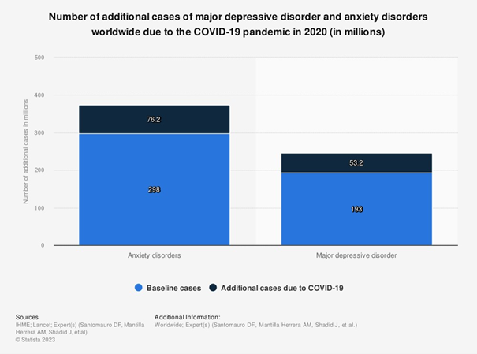

The pandemic obviously drained our energy and good sense of feeling about ourselves to such a drastic level that many people were caught in the grip of depression.
Quite fortunately, people isolated in homes had some spare time to find an alternative to their daily activities, which were forbidden during the virus outbreak. For example, some people started watching more movies or documentaries, but the lack of communication with other people was quite painful to endure.
That's the moment where gaming comes in. Games require people to write the story, to defeat rivals, or to simply take action. I think gaming is much more interesting when you have a team to play with, or at least a partner. In order to have maximum fun while playing games, people started to look for a good gaming communicator, and „discord” is the king. "teamspeak3" is in second place, but we will focus on discord.
Discord is a communicator created for gamers to create entire societies and, of course, communicate with others during games or by looking for someone to play with. During pandemics, it became even more popular. Gaming with Discord basically felt better, so people felt really relieved by their new hobby. Since people got interested in gaming because of boredom or lack of communication at the time they tried gaming on a PC, we could also see that mobile games were also recognized by a larger number of people struggling with everyday loneliness or forced changes.
Slowly coming to an end of the story, I would like to briefly recap my story with pandemics and gaming. I was mostly playing League of Legends. At first, I was really depressed, and I was starving for some human interactions. Later, I had something around 4 months helping my mother at her office, and after my help, I discovered league. I was interested in it since I saw some gameplay on Twitch.tv when it was really popular. If I have to be honest, I am quite glad that I started playing this game. It gave me many good moments and also some travel possibilities since I made some friendships through the game. This game also gave me a huge encouragement to start communicating with people, due to the game's difficulty and the mechanics rewarding cooperation. Here are some of my and my friends statistics from the games we played during pandemics and after.